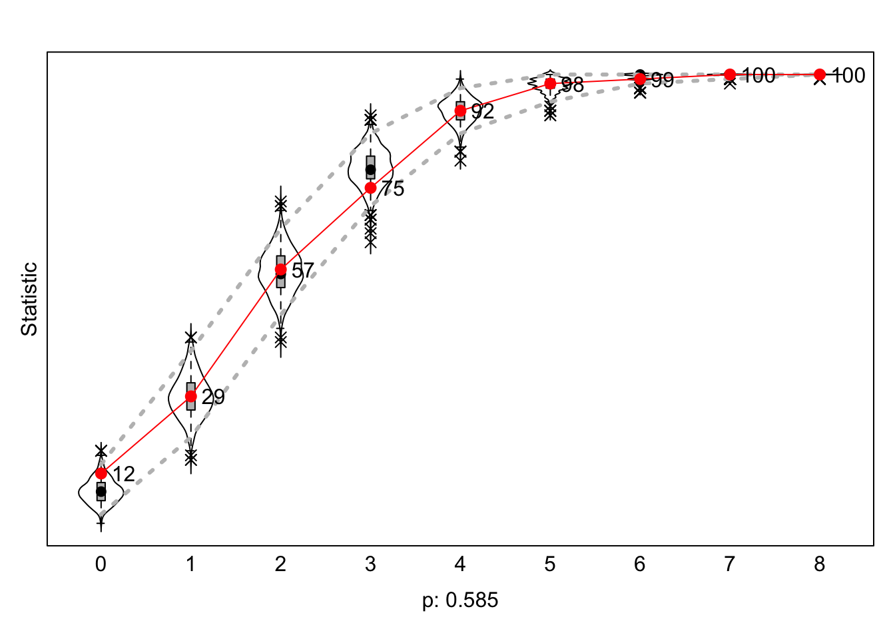
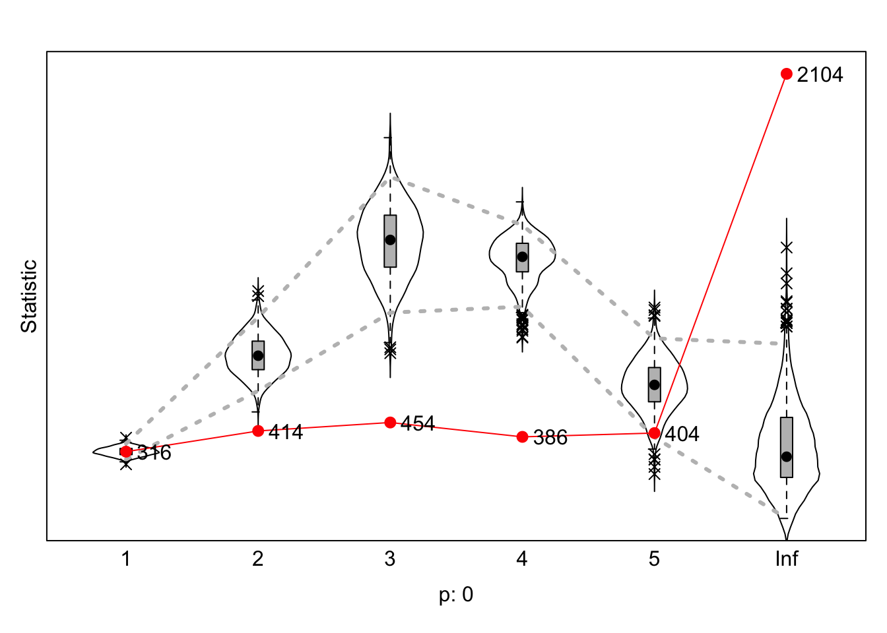

lab7
Ghislaine de Groot
2025-10-17
1 Packages
library(RSiena)
library(foreign)
library(tidyverse)
library(scholar)
library(openalexR)
library(rvest)
library(jsonlite)packages <- c("tidyverse", "scholar", "openalexR", "rvest", "jsonlite")
fpackage.check <- function(packages) {
lapply(packages, FUN = function(x) {
if (!require(x, character.only = TRUE)) {
install.packages(x, dependencies = TRUE)
library(x, character.only = TRUE)
}
})
}
fsave <- function(x, file = NULL, location = "./data/processed/") {
ifelse(!dir.exists("data"), dir.create("data"), FALSE)
ifelse(!dir.exists("data/processed"), dir.create("data/processed"), FALSE)
if (is.null(file))
file = deparse(substitute(x))
datename <- substr(gsub("[:-]", "", Sys.time()), 1, 8)
totalname <- paste(location, file, "_", datename, ".rda", sep = "")
save(x, file = totalname) #need to fix if file is reloaded as input name, not as x.
}
fload <- function(filename) {
load(filename)
get(ls()[ls() != "filename"])
}
fshowdf <- function(x, ...) {
knitr::kable(x, digits = 2, "html", ...) %>%
kableExtra::kable_styling(bootstrap_options = c("striped", "hover")) %>%
kableExtra::scroll_box(width = "100%", height = "300px")
}
fpackage.check(packages)## [[1]]
## NULL
##
## [[2]]
## NULL
##
## [[3]]
## NULL
##
## [[4]]
## NULL
##
## [[5]]
## NULLlibrary(openalexR)
library(tidyverse)
library(scholar)
library(rvest)
library(jsonlite)fcolnet <- function(data = scholars, university = "RU", discipline = "sociology", waves = list(c(2015,
2018), c(2019, 2023)), type = c("first")) {
# step 1
demographics <- do.call(rbind.data.frame, data$demographics)
demographics <- demographics %>%
mutate(Universiteit1.22 = replace(Universiteit1.22, is.na(Universiteit1.22), ""), Universiteit2.22 = replace(Universiteit2.22,
is.na(Universiteit2.22), ""), Universiteit1.24 = replace(Universiteit1.24, is.na(Universiteit1.24),
""), Universiteit2.24 = replace(Universiteit2.24, is.na(Universiteit2.24), ""), discipline.22 = replace(discipline.22,
is.na(discipline.22), ""), discipline.24 = replace(discipline.24, is.na(discipline.24), ""))
sample <- which((demographics$Universiteit1.22 %in% university | demographics$Universiteit2.22 %in%
university | demographics$Universiteit1.24 %in% university | demographics$Universiteit2.24 %in%
university) & (demographics$discipline.22 %in% discipline | demographics$discipline.24 %in% discipline))
demographics_soc <- demographics[sample, ]
scholars_sel <- lapply(scholars, "[", sample)
# step 2
ids <- demographics_soc$au_id
nwaves <- length(waves)
nets <- array(0, dim = c(nwaves, length(ids), length(ids)), dimnames = list(wave = 1:nwaves, ids,
ids))
dimnames(nets)
# step 3
df_works <- tibble(works_id = unlist(lapply(scholars_sel$work, function(l) l$id)), works_author = unlist(lapply(scholars_sel$work,
function(l) l$author), recursive = FALSE), works_year = unlist(lapply(scholars_sel$work, function(l) l$publication_year),
recursive = FALSE))
df_works <- df_works[!duplicated(df_works), ]
# step 4
if (type == "first") {
for (j in 1:nwaves) {
df_works_w <- df_works[df_works$works_year >= waves[[j]][1] & df_works$works_year <= waves[[j]][2],
]
for (i in 1:nrow(df_works_w)) {
ego <- df_works_w$works_author[i][[1]]$au_id[1]
alters <- df_works_w$works_author[i][[1]]$au_id[-1]
if (sum(ids %in% ego) > 0 & sum(ids %in% alters) > 0) {
nets[j, which(ids %in% ego), which(ids %in% alters)] <- 1
}
}
}
}
if (type == "last") {
for (j in 1:nwaves) {
df_works_w <- df_works[df_works$works_year >= waves[[j]][1] & df_works$works_year <= waves[[j]][2],
]
for (i in 1:nrow(df_works_w)) {
ego <- rev(df_works_w$works_author[i][[1]]$au_id)[1]
alters <- rev(df_works_w$works_author[i][[1]]$au_id)[-1]
if (sum(ids %in% ego) > 0 & sum(ids %in% alters) > 0) {
nets[j, which(ids %in% ego), which(ids %in% alters)] <- 1
}
}
}
}
if (type == "all") {
for (j in 1:nwaves) {
df_works_w <- df_works[df_works$works_year >= waves[[j]][1] & df_works$works_year <= waves[[j]][2],
]
for (i in 1:nrow(df_works_w)) {
egos <- df_works_w$works_author[i][[1]]$au_id
if (sum(ids %in% egos) > 0) {
nets[j, which(ids %in% egos), which(ids %in% egos)] <- 1
}
}
}
}
output <- list()
output$data <- scholars_sel
output$nets <- nets
return(output)
}2 Learning about goodness of fit
2.1 step 1 data
mynet1 <- sienaDependent(array(c(s501, s502, s503), dim=c(50, 50, 3)))
mybehh <- sienaDependent(s50a, type= "behavior")
drinking <- varCovar(s50a) # same info, but as covariate
smoko <- varCovar(s50s)
mydata <- sienaDataCreate(mynet1, mybehh, smoko)2.2 step 2
print01Report(mydata)2.3 step 3
myeff <- getEffects(mydata)
myeff## name effectName include fix test initialValue parm
## 1 mynet1 constant mynet1 rate (period 1) TRUE FALSE FALSE 4.69604 0
## 2 mynet1 constant mynet1 rate (period 2) TRUE FALSE FALSE 4.32885 0
## 3 mynet1 outdegree (density) TRUE FALSE FALSE -1.46770 0
## 4 mynet1 reciprocity TRUE FALSE FALSE 0.00000 0
## 5 mybehh rate mybehh (period 1) TRUE FALSE FALSE 0.70571 0
## 6 mybehh rate mybehh (period 2) TRUE FALSE FALSE 0.84939 0
## 7 mybehh mybehh linear shape TRUE FALSE FALSE 0.32237 0
## 8 mybehh mybehh quadratic shape TRUE FALSE FALSE 0.00000 0myeff <- includeEffects(myeff, unequalX, name = "mynet1", interaction1 = "smoko")## effectNumber effectName shortName include fix test initialValue parm
## 1 501 unequal smoko unequalX TRUE FALSE FALSE 0 0myeff_2 <- includeEffects(myeff, unequalX, name = "mynet1", interaction1 = "mybehh")## effectNumber effectName shortName include fix test initialValue parm
## 1 314 unequal mybehh unequalX TRUE FALSE FALSE 0 0myeff_3 <- includeEffects(myeff, unequalX, name = "mynet1", interaction1 = "drinking")## There is no effect with short name unequalX,
## and with interaction1 = <drinking>, interaction2 = <>, and type = <eval>,
## for dependent variable mynet1 .
## See effectsDocumentation() for this effects object.# data, statistic, network dependent variable, behavior variable2.4 step 4
algae <- sienaAlgorithmCreate()## If you use this algorithm object, siena07 will create/use an output file Siena.txt .ans <- siena07(algae, data=mydata, effects = myeff)## tcltk DLL is linked to '/opt/X11/lib/libX11.6.dylib'## Package tcltk not available, forcing use of batch mode##
## Start phase 0
## theta: 4.696 4.329 -1.468 0.000 0.000 0.706 0.849 0.322 0.000
##
## Start phase 1
## Phase 1 Iteration 1 Progress: 0%
## Phase 1 Iteration 2 Progress: 0%
## Phase 1 Iteration 3 Progress: 0%
## Phase 1 Iteration 4 Progress: 0%
## Phase 1 Iteration 5 Progress: 0%
## Phase 1 Iteration 10 Progress: 0%
## Phase 1 Iteration 15 Progress: 0%
## Phase 1 Iteration 20 Progress: 1%
## Phase 1 Iteration 25 Progress: 1%
## Phase 1 Iteration 30 Progress: 1%
## Phase 1 Iteration 35 Progress: 1%
## Phase 1 Iteration 40 Progress: 1%
## Phase 1 Iteration 45 Progress: 1%
## Phase 1 Iteration 50 Progress: 2%
## theta: 4.9889 4.3734 -1.5188 0.3570 -0.0432 0.7141 0.9103 0.4174 -0.0718
##
## Start phase 2.1
## Phase 2 Subphase 1 Iteration 1 Progress: 15%
## Phase 2 Subphase 1 Iteration 2 Progress: 15%
## theta 5.157 4.334 -1.576 0.757 -0.116 0.767 1.009 0.476 -0.142
## ac 0.904 0.882 1.374 1.211 1.413 1.681 1.017 0.860 1.481
## Phase 2 Subphase 1 Iteration 3 Progress: 15%
## Phase 2 Subphase 1 Iteration 4 Progress: 15%
## theta 5.322 4.145 -1.747 1.900 -0.307 0.944 1.376 0.572 -0.336
## ac 0.626 0.722 1.204 1.305 1.264 2.043 0.737 0.717 1.431
## Phase 2 Subphase 1 Iteration 5 Progress: 15%
## Phase 2 Subphase 1 Iteration 6 Progress: 15%
## theta 5.478 4.415 -1.921 2.608 -0.355 1.045 1.505 0.545 -0.395
## ac 0.774 0.709 0.710 1.167 0.895 1.402 0.784 0.600 1.679
## Phase 2 Subphase 1 Iteration 7 Progress: 15%
## Phase 2 Subphase 1 Iteration 8 Progress: 15%
## theta 5.451 4.586 -2.085 2.887 -0.386 1.160 1.584 0.456 -0.398
## ac 0.459 0.709 0.778 1.141 0.893 1.395 0.812 0.462 0.711
## Phase 2 Subphase 1 Iteration 9 Progress: 15%
## Phase 2 Subphase 1 Iteration 10 Progress: 15%
## theta 5.361 4.695 -2.199 2.995 -0.374 1.254 1.685 0.384 -0.345
## ac 0.483 0.705 0.811 1.143 0.898 1.396 0.865 0.495 0.682
## theta 5.827 4.626 -2.286 2.827 -0.215 1.221 1.634 0.362 -0.207
## ac -0.0747 0.0342 0.2610 0.5809 0.2643 0.0846 -0.1746 -0.0517 0.0178
## theta: 5.827 4.626 -2.286 2.827 -0.215 1.221 1.634 0.362 -0.207
##
## Start phase 2.2
## Phase 2 Subphase 2 Iteration 1 Progress: 22%
## Phase 2 Subphase 2 Iteration 2 Progress: 22%
## Phase 2 Subphase 2 Iteration 3 Progress: 22%
## Phase 2 Subphase 2 Iteration 4 Progress: 22%
## Phase 2 Subphase 2 Iteration 5 Progress: 22%
## Phase 2 Subphase 2 Iteration 6 Progress: 22%
## Phase 2 Subphase 2 Iteration 7 Progress: 22%
## Phase 2 Subphase 2 Iteration 8 Progress: 22%
## Phase 2 Subphase 2 Iteration 9 Progress: 23%
## Phase 2 Subphase 2 Iteration 10 Progress: 23%
## theta 5.853 4.559 -2.261 2.803 -0.223 1.153 1.621 0.370 -0.200
## ac 0.0500 -0.0233 -0.1242 -0.2109 0.0252 0.0742 -0.1962 -0.0274 0.0957
## theta: 5.853 4.559 -2.261 2.803 -0.223 1.153 1.621 0.370 -0.200
##
## Start phase 2.3
## Phase 2 Subphase 3 Iteration 1 Progress: 31%
## Phase 2 Subphase 3 Iteration 2 Progress: 31%
## Phase 2 Subphase 3 Iteration 3 Progress: 31%
## Phase 2 Subphase 3 Iteration 4 Progress: 31%
## Phase 2 Subphase 3 Iteration 5 Progress: 31%
## Phase 2 Subphase 3 Iteration 6 Progress: 31%
## Phase 2 Subphase 3 Iteration 7 Progress: 31%
## Phase 2 Subphase 3 Iteration 8 Progress: 31%
## Phase 2 Subphase 3 Iteration 9 Progress: 32%
## Phase 2 Subphase 3 Iteration 10 Progress: 32%
## theta 5.824 4.645 -2.273 2.815 -0.218 1.175 1.612 0.367 -0.202
## ac 0.03336 -0.03694 -0.00906 -0.13071 -0.02956 -0.06347 -0.08539 -0.00689 0.08484
## theta: 5.824 4.645 -2.273 2.815 -0.218 1.175 1.612 0.367 -0.202
##
## Start phase 2.4
## Phase 2 Subphase 4 Iteration 1 Progress: 45%
## Phase 2 Subphase 4 Iteration 2 Progress: 45%
## Phase 2 Subphase 4 Iteration 3 Progress: 45%
## Phase 2 Subphase 4 Iteration 4 Progress: 45%
## Phase 2 Subphase 4 Iteration 5 Progress: 45%
## Phase 2 Subphase 4 Iteration 6 Progress: 45%
## Phase 2 Subphase 4 Iteration 7 Progress: 45%
## Phase 2 Subphase 4 Iteration 8 Progress: 45%
## Phase 2 Subphase 4 Iteration 9 Progress: 45%
## Phase 2 Subphase 4 Iteration 10 Progress: 45%
## theta 5.812 4.592 -2.267 2.805 -0.216 1.177 1.648 0.367 -0.200
## ac -0.0235 0.0359 -0.0478 -0.0170 0.0116 -0.0362 -0.0589 0.0385 -0.0311
## theta: 5.812 4.592 -2.267 2.805 -0.216 1.177 1.648 0.367 -0.200
##
## Start phase 3
## Phase 3 Iteration 500 Progress 85%
## Phase 3 Iteration 1000 Progress 100%ans2 <- siena07(algae, data=mydata, effects = myeff_2, prevAns=ans)## tcltk DLL is linked to '/opt/X11/lib/libX11.6.dylib'
## Package tcltk not available, forcing use of batch mode##
## Start phase 0
## theta: 5.812 4.592 -2.267 2.805 0.000 -0.216 1.177 1.648 0.367 -0.200
##
## Start phase 1
## Phase 1 Iteration 1 Progress: 0%
## Phase 1 Iteration 2 Progress: 0%
## Phase 1 Iteration 3 Progress: 0%
## Phase 1 Iteration 4 Progress: 0%
## Phase 1 Iteration 5 Progress: 0%
## Phase 1 Iteration 10 Progress: 0%
## Phase 1 Iteration 15 Progress: 0%
## Phase 1 Iteration 20 Progress: 1%
## Phase 1 Iteration 25 Progress: 1%
## Phase 1 Iteration 30 Progress: 1%
## Phase 1 Iteration 35 Progress: 1%
## Phase 1 Iteration 40 Progress: 1%
## Phase 1 Iteration 45 Progress: 1%
## Phase 1 Iteration 50 Progress: 1%
## theta: 5.8151 4.6059 -2.1903 2.7813 -0.0896 -0.2177 1.1489 1.6117 0.3733 -0.1981
##
## Start phase 2.1
## Phase 2 Subphase 1 Iteration 1 Progress: 16%
## Phase 2 Subphase 1 Iteration 2 Progress: 16%
## theta 5.569 4.415 -2.184 2.791 -0.113 -0.212 1.117 1.712 0.381 -0.202
## ac -2.018 2.300 -0.623 -6.133 -2.705 -2.474 0.731 1.507 -0.026 -0.576
## Phase 2 Subphase 1 Iteration 3 Progress: 16%
## Phase 2 Subphase 1 Iteration 4 Progress: 16%
## theta 5.670 4.261 -2.133 2.787 -0.177 -0.235 1.089 1.821 0.371 -0.203
## ac -1.768 1.459 -0.674 -0.547 -2.614 2.417 1.017 0.633 -0.426 -0.699
## Phase 2 Subphase 1 Iteration 5 Progress: 16%
## Phase 2 Subphase 1 Iteration 6 Progress: 16%
## theta 5.766 4.266 -2.169 2.859 -0.158 -0.272 1.140 1.817 0.385 -0.205
## ac -1.7748 0.4174 -0.8327 -0.0254 0.0690 0.2343 0.7343 -0.1636 -0.3474 -0.6841
## Phase 2 Subphase 1 Iteration 7 Progress: 16%
## Phase 2 Subphase 1 Iteration 8 Progress: 16%
## theta 5.619 4.487 -2.142 2.865 -0.206 -0.275 1.183 1.524 0.402 -0.176
## ac -0.9135 0.3172 -0.7996 -0.0789 0.4363 0.2562 0.0294 -0.1421 -0.1901 -0.8184
## Phase 2 Subphase 1 Iteration 9 Progress: 16%
## Phase 2 Subphase 1 Iteration 10 Progress: 16%
## theta 5.594 4.553 -2.084 2.871 -0.286 -0.237 1.094 1.715 0.369 -0.192
## ac -0.1158 -0.2500 -1.0293 -0.1860 0.0351 0.5658 -0.0326 -0.6750 -0.0209 -0.7970
## theta 5.731 4.506 -1.938 2.803 -0.487 -0.186 1.182 1.643 0.376 -0.205
## ac 0.0212 -0.1403 0.1209 -0.0501 0.0917 -0.0668 -0.0485 -0.2358 0.0229 -0.0506
## theta: 5.731 4.506 -1.938 2.803 -0.487 -0.186 1.182 1.643 0.376 -0.205
##
## Start phase 2.2
## Phase 2 Subphase 2 Iteration 1 Progress: 23%
## Phase 2 Subphase 2 Iteration 2 Progress: 23%
## Phase 2 Subphase 2 Iteration 3 Progress: 23%
## Phase 2 Subphase 2 Iteration 4 Progress: 23%
## Phase 2 Subphase 2 Iteration 5 Progress: 23%
## Phase 2 Subphase 2 Iteration 6 Progress: 23%
## Phase 2 Subphase 2 Iteration 7 Progress: 23%
## Phase 2 Subphase 2 Iteration 8 Progress: 23%
## Phase 2 Subphase 2 Iteration 9 Progress: 23%
## Phase 2 Subphase 2 Iteration 10 Progress: 23%
## theta 5.806 4.555 -1.937 2.802 -0.480 -0.199 1.182 1.651 0.370 -0.201
## ac -0.1135 0.1261 -0.0943 0.0164 -0.0788 -0.0633 -0.0802 -0.0507 0.0198 0.0822
## theta: 5.806 4.555 -1.937 2.802 -0.480 -0.199 1.182 1.651 0.370 -0.201
##
## Start phase 2.3
## Phase 2 Subphase 3 Iteration 1 Progress: 32%
## Phase 2 Subphase 3 Iteration 2 Progress: 32%
## Phase 2 Subphase 3 Iteration 3 Progress: 32%
## Phase 2 Subphase 3 Iteration 4 Progress: 32%
## Phase 2 Subphase 3 Iteration 5 Progress: 32%
## Phase 2 Subphase 3 Iteration 6 Progress: 32%
## Phase 2 Subphase 3 Iteration 7 Progress: 32%
## Phase 2 Subphase 3 Iteration 8 Progress: 32%
## Phase 2 Subphase 3 Iteration 9 Progress: 32%
## Phase 2 Subphase 3 Iteration 10 Progress: 32%
## theta 5.738 4.492 -1.938 2.801 -0.479 -0.199 1.168 1.634 0.367 -0.200
## ac -0.08696 0.03203 0.16935 -0.11827 0.14190 0.02866 -0.03758 -0.05301 0.00749 -0.14648
## theta: 5.738 4.492 -1.938 2.801 -0.479 -0.199 1.168 1.634 0.367 -0.200
##
## Start phase 2.4
## Phase 2 Subphase 4 Iteration 1 Progress: 46%
## Phase 2 Subphase 4 Iteration 2 Progress: 46%
## Phase 2 Subphase 4 Iteration 3 Progress: 46%
## Phase 2 Subphase 4 Iteration 4 Progress: 46%
## Phase 2 Subphase 4 Iteration 5 Progress: 46%
## Phase 2 Subphase 4 Iteration 6 Progress: 46%
## Phase 2 Subphase 4 Iteration 7 Progress: 46%
## Phase 2 Subphase 4 Iteration 8 Progress: 46%
## Phase 2 Subphase 4 Iteration 9 Progress: 46%
## Phase 2 Subphase 4 Iteration 10 Progress: 46%
## theta 5.703 4.542 -1.922 2.795 -0.501 -0.192 1.168 1.639 0.367 -0.200
## ac -0.046683 0.057760 0.019524 0.025345 -0.013816 -0.046187 -0.009655 -0.020558 0.000118 -0.003732
## theta: 5.703 4.542 -1.922 2.795 -0.501 -0.192 1.168 1.639 0.367 -0.200
##
## Start phase 3
## Phase 3 Iteration 500 Progress 85%
## Phase 3 Iteration 1000 Progress 100%ans3 <- siena07(algae, data=mydata, effects = myeff_3, prevAns=ans2, returnDeps = TRUE)## tcltk DLL is linked to '/opt/X11/lib/libX11.6.dylib'
## Package tcltk not available, forcing use of batch mode##
## Start phase 0
## theta: 5.703 4.542 -1.922 2.795 -0.192 1.168 1.639 0.367 -0.200
##
## Start phase 1
## Phase 1 Iteration 1 Progress: 0%
## Phase 1 Iteration 2 Progress: 0%
## Phase 1 Iteration 3 Progress: 0%
## Phase 1 Iteration 4 Progress: 0%
## Phase 1 Iteration 5 Progress: 0%
## Phase 1 Iteration 10 Progress: 0%
## Phase 1 Iteration 15 Progress: 0%
## Phase 1 Iteration 20 Progress: 1%
## Phase 1 Iteration 25 Progress: 1%
## Phase 1 Iteration 30 Progress: 1%
## Phase 1 Iteration 35 Progress: 1%
## Phase 1 Iteration 40 Progress: 1%
## Phase 1 Iteration 45 Progress: 1%
## Phase 1 Iteration 50 Progress: 2%
## theta: 5.792 4.572 -1.952 2.787 -0.186 1.193 1.673 0.345 -0.195
##
## Start phase 2.1
## Phase 2 Subphase 1 Iteration 1 Progress: 15%
## Phase 2 Subphase 1 Iteration 2 Progress: 15%
## theta 5.739 4.397 -1.981 2.765 -0.237 1.232 1.686 0.320 -0.182
## ac 2.504 6.414 1.228 1.371 1.391 0.203 0.532 -0.526 -0.498
## Phase 2 Subphase 1 Iteration 3 Progress: 15%
## Phase 2 Subphase 1 Iteration 4 Progress: 15%
## theta 5.865 4.342 -2.067 2.684 -0.301 1.413 1.573 0.295 -0.175
## ac 2.272 4.742 1.187 1.313 1.307 0.398 0.605 -0.477 -0.501
## Phase 2 Subphase 1 Iteration 5 Progress: 15%
## Phase 2 Subphase 1 Iteration 6 Progress: 15%
## theta 5.510 4.425 -2.126 2.571 -0.294 1.438 1.329 0.340 -0.183
## ac 2.3170 2.3104 1.1602 1.2969 1.2766 0.5902 0.3956 -0.2411 -0.0869
## Phase 2 Subphase 1 Iteration 7 Progress: 15%
## Phase 2 Subphase 1 Iteration 8 Progress: 15%
## theta 5.184 4.433 -2.191 2.620 -0.311 1.386 1.481 0.319 -0.182
## ac 2.318 1.886 1.141 1.323 1.259 0.598 0.428 -0.524 -0.384
## Phase 2 Subphase 1 Iteration 9 Progress: 15%
## Phase 2 Subphase 1 Iteration 10 Progress: 15%
## theta 4.939 4.368 -2.228 2.658 -0.313 1.358 1.512 0.364 -0.174
## ac 0.979 1.494 1.089 1.286 1.204 0.494 0.375 -0.519 -0.279
## theta 5.684 4.614 -2.256 2.787 -0.219 1.197 1.636 0.366 -0.198
## ac -0.0725 -0.0774 0.4756 0.4135 0.2577 -0.0156 -0.0366 -0.1857 -0.0792
## theta: 5.684 4.614 -2.256 2.787 -0.219 1.197 1.636 0.366 -0.198
##
## Start phase 2.2
## Phase 2 Subphase 2 Iteration 1 Progress: 22%
## Phase 2 Subphase 2 Iteration 2 Progress: 22%
## Phase 2 Subphase 2 Iteration 3 Progress: 22%
## Phase 2 Subphase 2 Iteration 4 Progress: 22%
## Phase 2 Subphase 2 Iteration 5 Progress: 22%
## Phase 2 Subphase 2 Iteration 6 Progress: 22%
## Phase 2 Subphase 2 Iteration 7 Progress: 22%
## Phase 2 Subphase 2 Iteration 8 Progress: 22%
## Phase 2 Subphase 2 Iteration 9 Progress: 23%
## Phase 2 Subphase 2 Iteration 10 Progress: 23%
## theta 5.790 4.573 -2.255 2.792 -0.223 1.203 1.663 0.359 -0.195
## ac 0.0108 0.0915 0.0164 0.0357 0.0135 0.1188 0.0333 -0.0189 -0.0376
## theta: 5.790 4.573 -2.255 2.792 -0.223 1.203 1.663 0.359 -0.195
##
## Start phase 2.3
## Phase 2 Subphase 3 Iteration 1 Progress: 31%
## Phase 2 Subphase 3 Iteration 2 Progress: 31%
## Phase 2 Subphase 3 Iteration 3 Progress: 31%
## Phase 2 Subphase 3 Iteration 4 Progress: 31%
## Phase 2 Subphase 3 Iteration 5 Progress: 31%
## Phase 2 Subphase 3 Iteration 6 Progress: 31%
## Phase 2 Subphase 3 Iteration 7 Progress: 31%
## Phase 2 Subphase 3 Iteration 8 Progress: 31%
## Phase 2 Subphase 3 Iteration 9 Progress: 32%
## Phase 2 Subphase 3 Iteration 10 Progress: 32%
## theta 5.785 4.606 -2.281 2.828 -0.215 1.195 1.643 0.366 -0.207
## ac 0.0887 0.0451 -0.0532 0.0073 -0.0524 -0.0650 0.0420 -0.0369 -0.0684
## theta: 5.785 4.606 -2.281 2.828 -0.215 1.195 1.643 0.366 -0.207
##
## Start phase 2.4
## Phase 2 Subphase 4 Iteration 1 Progress: 45%
## Phase 2 Subphase 4 Iteration 2 Progress: 45%
## Phase 2 Subphase 4 Iteration 3 Progress: 45%
## Phase 2 Subphase 4 Iteration 4 Progress: 45%
## Phase 2 Subphase 4 Iteration 5 Progress: 45%
## Phase 2 Subphase 4 Iteration 6 Progress: 45%
## Phase 2 Subphase 4 Iteration 7 Progress: 45%
## Phase 2 Subphase 4 Iteration 8 Progress: 45%
## Phase 2 Subphase 4 Iteration 9 Progress: 45%
## Phase 2 Subphase 4 Iteration 10 Progress: 45%
## theta 5.830 4.603 -2.264 2.799 -0.217 1.195 1.646 0.364 -0.200
## ac 0.03156 -0.00501 0.00714 -0.04675 -0.07490 -0.08658 -0.06628 -0.02148 0.01618
## theta: 5.830 4.603 -2.264 2.799 -0.217 1.195 1.646 0.364 -0.200
##
## Start phase 3
## Phase 3 Iteration 500 Progress 85%
## Phase 3 Iteration 1000 Progress 100%# previous estimation, estimation of the previous model
# with third model, it's mismatched now. interaction effect is insig (already was insig but shh)# see here: ?'sienaGOF-auxiliary'
# The geodesic distribution is not available from within RSiena, and therefore is copied from the
# help page of sienaGOF-auxiliary:
# GeodesicDistribution calculates the distribution of non-directed geodesic distances; see
# ?sna::geodist The default for \code{levls} reflects the usual phenomenon that geodesic distances
# larger than 5 do not differ appreciably with respect to interpretation. Note that the levels of
# the result are named; these names are used in the \code{plot} method.
GeodesicDistribution <- function(i, data, sims, period, groupName, mynet1, levls = c(1:5, Inf), cumulative = TRUE,
...) {
x <- networkExtraction(i, data, sims, period, groupName, mynet1)
require(sna)
a <- sna::geodist(symmetrize(x))$gdist
if (cumulative) {
gdi <- sapply(levls, function(i) {
sum(a <= i)
})
} else {
gdi <- sapply(levls, function(i) {
sum(a == i)
})
}
names(gdi) <- as.character(levls)
gdi
}
# The following function is taken from the help page for sienaTest
testall <- function(ans) {
for (i in which(ans$test)) {
sct <- score.Test(ans, i)
cat(ans$requestedEffects$effectName[i], "\n")
print(sct)
}
invisible(score.Test(ans))
}gofi0 <- sienaGOF(ans3, IndegreeDistribution, verbose = FALSE, join = TRUE, varName = "mynet1")
gofo0 <- sienaGOF(ans3, OutdegreeDistribution, verbose = FALSE, join = TRUE, levls = c(0:10, 15, 20),
varName = "mynet1")
gof0.gd <- sienaGOF(ans3, GeodesicDistribution, cumulative = FALSE, verbose = FALSE, join = TRUE, varName = "mynet1")# to check the indegree distribution of the outcome network ourselves:
# table(colSums(wave2))plot(gofi0, main = "")
# goodness of fit distribution
# x-axis number of indegrees per person
# y-axis frequency
# 0 people with no indegrees
# boxplot: based on estimation, simulated networks, for each simulated network there is an indegree count
# median value of simualted
# violent/violin plot: normal distribution of simulations
# bit overkill to have both
# red is observed network
# the numbers increase, it's not cumulative except for the fact that they are stacked in one plot because they have a different scale, plus it's counterintuitive
# 12 + 17 = 29
# underestimate or overestimate? in the SNASS graph, it is overestimation, underestimate isolates, overestimate people with some degrees, underestimate people with many degrees
# fixed, no randomness
# testing a set of random variables against fixed values, one sample t-test
# this test is called uhhh monte carlo something something
# it's not (always) clear what to do, but if these common GOF statistics don't fit then something went wrong
# "maybe you shouldn't use RSiena"plot(gof0.gd, main = "")2.5 
Read 7.15.4
2.6 At each decision point, the statistics are checked…?
R keeps self-destructing when I try to run this chunk, so I had to deactivate it.
RI <- RSiena:::sienaRI(data = mydata, ans = ans3)
RI <- RSiena:::sienaRI(
data = ,
theta = theta.eval,
algorithm = myAlgorithm
effects = myeff.eval
)
class(RI) # now running plot for that specific type
plot <- RSiena:::sienaRI(RI[1])
#addPieChart = TRUE, legendColumns = 3)
# depend on tie characteristics how relevant certain statistics are for a node
# does not reflect parameter
# if reciprocity is relevant overall, if it applies to you it definitely influences your decision, but if it doesn't apply to you then it doesn't influence
# RSiena tutorial > Analyse > 6.8 graph
# indegree popularity not as relevant
# micro-macro link
# some GOF in the paper
# need to include plot3 Own data
3.1 Practicing with RSiena without prestige
3.1.1 Reloading sociologists
scholars <- fload("./data/processed/scholars_20240924.rda")
demographics <- do.call(rbind.data.frame, scholars$demographics)
sample <- which(demographics$discipline.22 == "sociology" | demographics$discipline.24 == "sociology")
demographics_soc <- demographics[sample,]
sociologists <- lapply(scholars, "[",sample)3.1.2 own fcolnet, different from niels
fcolnet_25 <- function(data = scholars, university = "RU", discipline = "sociology", waves = list(c(2015,
2018), c(2019, 2023)), type = c("first")) {
# step 1
demographics <- do.call(rbind.data.frame, data$demographics)
demographics <- demographics %>%
mutate(Universiteit1.22 = replace(Universiteit1.22, is.na(Universiteit1.22), ""), Universiteit2.22 = replace(Universiteit2.22,
is.na(Universiteit2.22), ""), Universiteit1.24 = replace(Universiteit1.24, is.na(Universiteit1.24),
""), Universiteit2.24 = replace(Universiteit2.24, is.na(Universiteit2.24), ""), discipline.22 = replace(discipline.22,
is.na(discipline.22), ""), discipline.24 = replace(discipline.24, is.na(discipline.24), ""))
sample <- which((demographics$Universiteit1.22 %in% university | demographics$Universiteit2.22 %in%
university | demographics$Universiteit1.24 %in% university | demographics$Universiteit2.24 %in%
university) & (demographics$discipline.22 %in% discipline | demographics$discipline.24 %in% discipline))
demographics_soc <- demographics[sample, ]
scholars_sel <- lapply(scholars, "[", sample)
# step 2
ids <- demographics_soc$au_id
nwaves <- length(waves)
nets <- array(0, dim = c(nwaves, length(ids), length(ids)), dimnames = list(wave = 1:nwaves, ids,
ids))
dimnames(nets)
# step 3
df_works <- tibble(works_id = unlist(lapply(scholars_sel$work, function(l) l$id)), works_author = unlist(lapply(scholars_sel$work,
function(l) l$author), recursive = FALSE), works_year = unlist(lapply(scholars_sel$work, function(l) l$publication_year),
recursive = FALSE))
df_works <- df_works[!duplicated(df_works), ]
# step 4
if (type == "first") {
for (j in 1:nwaves) {
df_works_w <- df_works[df_works$works_year >= waves[[j]][1] & df_works$works_year <= waves[[j]][2],
]
for (i in 1:nrow(df_works_w)) {
ego <- df_works_w$works_author[i][[1]]$au_id[1]
alters <- df_works_w$works_author[i][[1]]$au_id[-1]
if (sum(ids %in% ego) > 0 & sum(ids %in% alters) > 0) {
nets[j, which(ids %in% ego), which(ids %in% alters)] <- 1
}
}
}
}
if (type == "last") {
for (j in 1:nwaves) {
df_works_w <- df_works[df_works$works_year >= waves[[j]][1] & df_works$works_year <= waves[[j]][2],
]
for (i in 1:nrow(df_works_w)) {
ego <- rev(df_works_w$works_author[i][[1]]$au_id)[1]
alters <- rev(df_works_w$works_author[i][[1]]$au_id)[-1]
if (sum(ids %in% ego) > 0 & sum(ids %in% alters) > 0) {
nets[j, which(ids %in% ego), which(ids %in% alters)] <- 1
}
}
}
}
if (type == "all") {
for (j in 1:nwaves) {
df_works_w <- df_works[df_works$works_year >= waves[[j]][1] & df_works$works_year <= waves[[j]][2],
]
for (i in 1:nrow(df_works_w)) {
egos <- df_works_w$works_author[i][[1]]$au_id
if (sum(ids %in% egos) > 0) {
nets[j, which(ids %in% egos), which(ids %in% egos)] <- 1
}
}
}
}
output <- list()
output$data <- scholars_sel
output$nets <- nets
return(output)
}| Trying to get network data for RSiena. |
ids <- demographics_soc$au_id
wave2 <- wave1 <- matrix(0, nrow = length(ids), ncol = length(ids), dimnames = list(ids, ids))soc_test_data_create <- sienaDataCreate(wave1, wave2)
soc_test_data <- sienaDependent(array(c(wave1, wave2), dim = c(386, 386, 2)))mybehh <- sienaDependent(sociologists, type= "behavior")testsoceff <- getEffects(soc_test_data)4 With the new data
UU_RU_test <- fcolnet(data = scholars,
university = c("UU", "RU"),
discipline = "Sociologie",
waves = list(c(2015, 2018), c(2019, 2023), c(2024, 2025)),
type = c("first"))## Warning: Unknown or uninitialised column: `works_year`.
## Unknown or uninitialised column: `works_year`.## Warning: Unknown or uninitialised column: `works_author`.
## Unknown or uninitialised column: `works_author`.
## Unknown or uninitialised column: `works_author`.
## Unknown or uninitialised column: `works_author`.## Warning: Unknown or uninitialised column: `works_year`.
## Unknown or uninitialised column: `works_year`.## Warning: Unknown or uninitialised column: `works_author`.
## Unknown or uninitialised column: `works_author`.
## Unknown or uninitialised column: `works_author`.
## Unknown or uninitialised column: `works_author`.## Warning: Unknown or uninitialised column: `works_year`.
## Unknown or uninitialised column: `works_year`.## Warning: Unknown or uninitialised column: `works_author`.
## Unknown or uninitialised column: `works_author`.
## Unknown or uninitialised column: `works_author`.
## Unknown or uninitialised column: `works_author`.test <- fcolnet(data = scholars,
university = c("UU", "RU"),
discipline = c("Sociologie", "Politicologie"),
waves = list(c(2015, 2018), c(2019, 2025)),
type = c("all"))## Warning: Unknown or uninitialised column: `works_year`.
## Unknown or uninitialised column: `works_year`.## Warning: Unknown or uninitialised column: `works_author`.
## Unknown or uninitialised column: `works_author`.## Warning: Unknown or uninitialised column: `works_year`.
## Unknown or uninitialised column: `works_year`.## Warning: Unknown or uninitialised column: `works_author`.
## Unknown or uninitialised column: `works_author`.df <- test$data
df_ego <- do.call(cbind.data.frame, df)df_ego = df_ego |>
mutate(
uni = case_when(
universiteit.22 == "UU" ~ 1,
universiteit.24 == "UU" ~ 1,
universiteit.25 == "UU" ~ 1,
.default = 0
)
)
uni = coCovar(df_ego$uni)4.0.1 VAMOS
testdata = sienaDataCreate(net, uni)
testeff = getEffects(testdata)
testeff = includeEffects(testeff, isolateNet, inPop.c, outAct)
myAlgorithm = sienaAlgorithmCreate(
projname = "soc_init")
ansM1 = siena07(
myAlgorithm,
data = testdata,
effects = testeff,
returnDeps = TRUE
)
ansM14.0.2 plot network
test <- fcolnet(data = scholars,
university = c("UU", "RU"),
discipline = c("Sociologie", "Politicologie"),
waves = list(c(2015, 2018), c(2019, 2025)),
type = c("all"))## Warning: Unknown or uninitialised column: `works_year`.
## Unknown or uninitialised column: `works_year`.## Warning: Unknown or uninitialised column: `works_author`.
## Unknown or uninitialised column: `works_author`.## Warning: Unknown or uninitialised column: `works_year`.
## Unknown or uninitialised column: `works_year`.## Warning: Unknown or uninitialised column: `works_author`.
## Unknown or uninitialised column: `works_author`.test_w2 <- igraph::graph_from_adjacency_matrix(
test$nets[2,,], #now, I take the second wave
mode = c("directed"),
weighted = NULL,
diag = FALSE,
add.colnames = NULL,
)
#Let us find ego characteristics.
#first fish out the data
df <- test$data
#same complicated structure as 'scholars' thus first make a dataframe from the list in which all info was saved.
df_ego <- do.call(cbind.data.frame, df$demographics)
plot(test_w2,
vertex.color = ifelse(df_ego$universiteit.24 == "UU", "yellow", "red"), #now, I can use actor attributes for plotting.
vertex.label = NA,
vertex.size = 5,
edge.width = 0.2,
edge.arrow.size = 0.2)
4.0.3 drop isolates
noisolates = rowSums(test$nets[2,,]) > 0
netnew = test$nets[2,noisolates,noisolates]
dfnew = df_ego[noisolates, ]
test_w2_new <- igraph::graph_from_adjacency_matrix(
netnew, #now, I take the second wave
mode = c("directed"),
weighted = NULL,
diag = FALSE,
add.colnames = NULL,
)
plot(test_w2_new,
vertex.color = ifelse(dfnew$universiteit.24 == "UU", "yellow", "red"), #now, I can use actor attributes for plotting.
vertex.label = NA,
vertex.size = 5,
node.size = 0.2,
edge.width = 0.2,
edge.arrow.size =0.2)
testall <- fcolnet(data = scholars,
university = c("UU", 'RU', 'UvT', 'RUG'),
discipline = "Sociologie",
waves = list(c(2015, 2018), c(2019, 2025)),
type = c("all"))## Warning: Unknown or uninitialised column: `works_year`.
## Unknown or uninitialised column: `works_year`.## Warning: Unknown or uninitialised column: `works_author`.
## Unknown or uninitialised column: `works_author`.## Warning: Unknown or uninitialised column: `works_year`.
## Unknown or uninitialised column: `works_year`.## Warning: Unknown or uninitialised column: `works_author`.
## Unknown or uninitialised column: `works_author`.testall_w2 <- igraph::graph_from_adjacency_matrix(
test$nets[2,,], #now, I take the second wave
mode = c("directed"),
weighted = NULL,
diag = FALSE,
add.colnames = NULL,
)
#Let us find ego characteristics.
#first fish out the data
df <- test$data
#same complicated structure as 'scholars' thus first make a dataframe from the list in which all info was saved.
df_ego <- do.call(rbind.data.frame, df$demographics)
df_ego## data frame with 0 columns and 0 rowslastplot <- plot(test_w2,
vertex.color = ifelse(df_ego$discipline.24 == "Sociologie", "yellow", "red"), #now, I can use actor attributes for plotting.
vertex.label = NA,
vertex.size = 5,
edge.width = 0.2,
edge.arrow.size =0.2)
